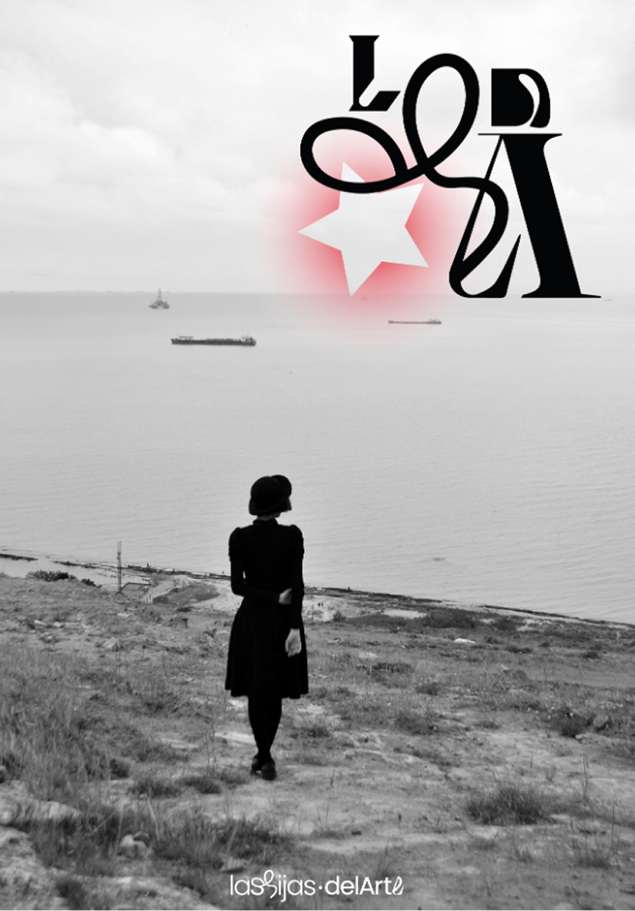
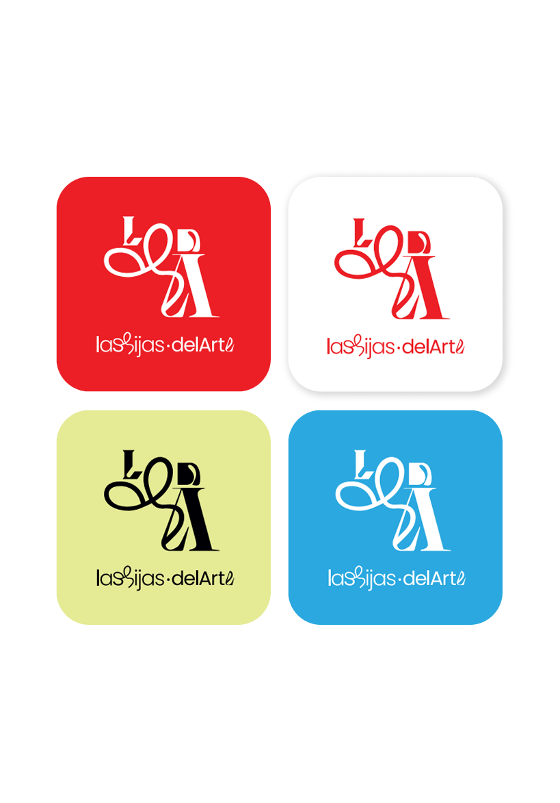
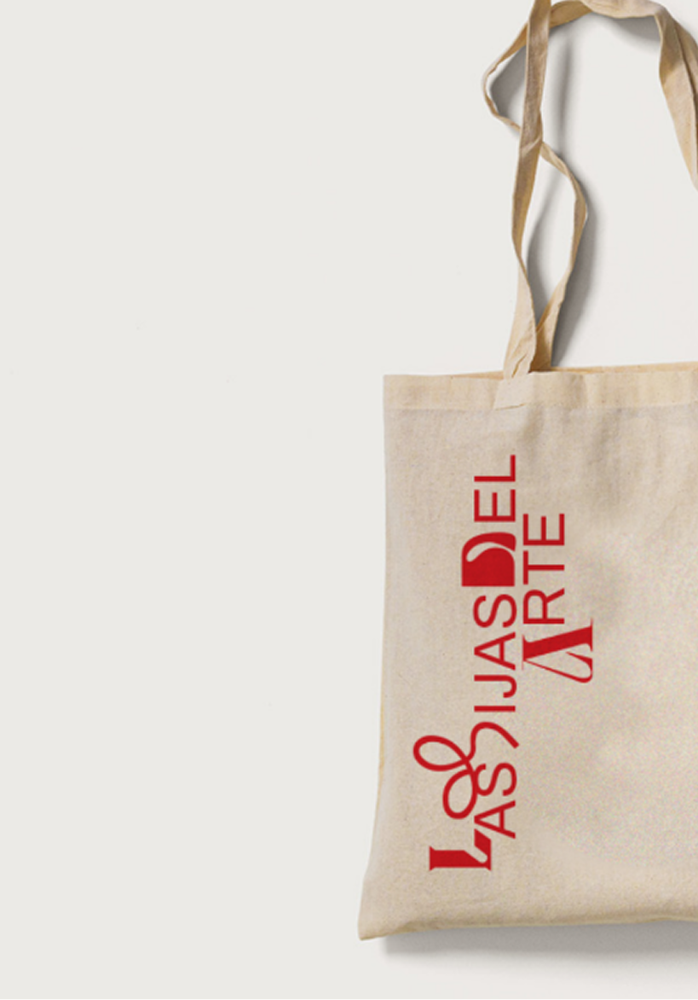

Las hijas del Arte
- branding
- identity design
- Typography
A redesign that went beyond aesthetics. The goal was to make Kutxabank's app clearer, more accessible and easier to use — building a scalable design system that the client's team could own and evolve independently.


As part of the 2023–24 redesign team, I contributed to transforming Kutxabank's app into a more intuitive and accessible experience. My focus went beyond visual updates: I worked on the foundations of the Design System, documenting it in a way that made adoption straightforward for the client's internal team, ensuring long-term consistency and scalability across the product.


The Design System covered typography, color palette, modular components, tokens and interaction patterns — all structured to support future product evolution. Alongside the deliverables, I led hands-on sessions to train the client's team on how to use and maintain the system, reducing dependency and empowering them to grow it over time. I also designed custom illustrations and testable prototypes that gave the app a distinctive visual identity and improved communication with end users at every touchpoint.